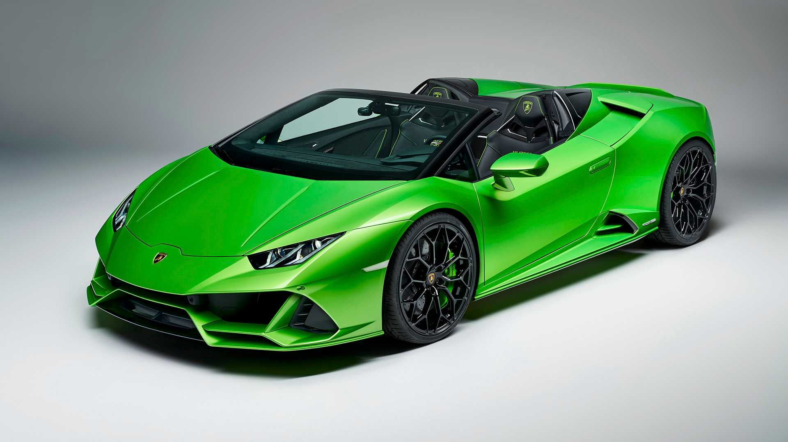
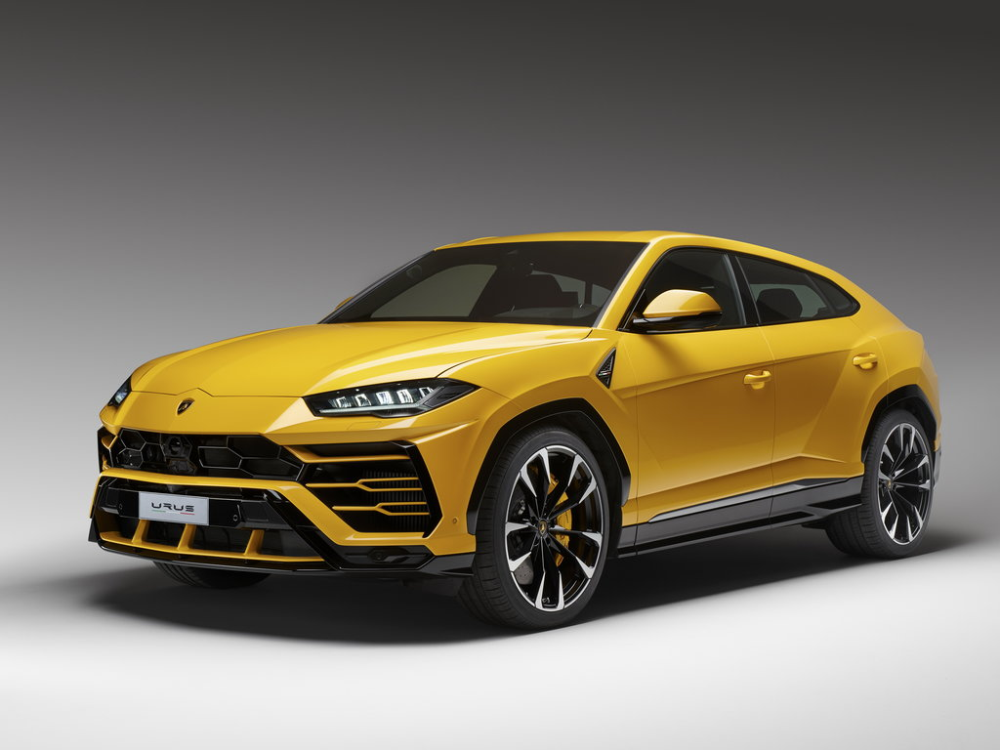

Lamborghini
Automobili Lamborghini S.p.A. — итальянская компания, производитель дорогих спортивных автомобилей под маркой Lamborghini. Находится в коммуне Сант-Агата-Болоньезе, около Болоньи. Компания основана в 1963 году Ферруччо Ламборгини; на тот момент он уже был владельцем крупной компании по производству тракторов.
Huracán Evo Spyder

- МАКСИМАЛЬНАЯ СКОРОСТЬ 325 км/ч
- РАЗГОН 0–100 КМ/Ч 3,1 c
- РАБОЧИЙ ОБЪЕМ ЦИЛИНДРОВ 5.204 cм³
- ВЫБРОСЫ CO2 РАСХОД 338 g/km (WLTP)
- СЦЕПЛЕНИЕ Двухдисковое сцепление Ø 187 мм
URUS

- МАКСИМАЛЬНАЯ СКОРОСТЬ 305 км/ч
- РАЗГОН 0–100 КМ/Ч 3,6 c
- РАБОЧИЙ ОБЪЕМ ЦИЛИНДРОВ 3.996 см³
- ВЫБРОСЫ CO2 РАСХОД 325 g/km (WLTP)
- СЦЕПЛЕНИЕ Двухдисковое сцепление Ø 195 мм
Связаться с продовцом через: